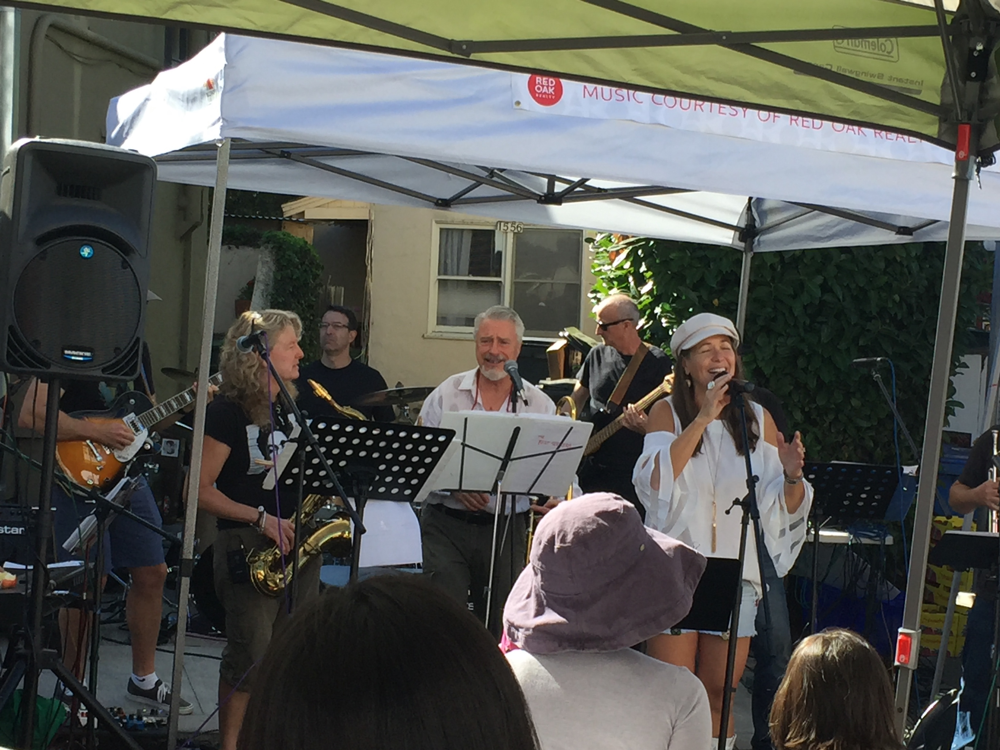

Kensington Farmers Market
My second farmers market experience
Just like with yesterday’s market, I was taken aback by the sheer amount of stands that weren’t just produce directly from the farm. The venues included food stands, wineries, bakeries, and even a miniature “auditorium” in front of a live band where you could sit down and enjoy the food and music.
Again, it takes place outside, so on a very sunny day the whole place felt friendly and organic and never too industrial. From what I could see, people coming from various racial, ethnic, and age groups were there - as I’ve come to find, farmers markets cater pretty universally.
Both markets featured a wide variety of non-food related activities, namely watching performers and speaking with activists. Outside of the main row of stands selling food were the stands promoting various organizations, and even stands with caretakers for children and pets. I thought the stands with activists tied in well with the whole idea that we don’t exist merely to be consumers. Sure we can choose to buy local and direct from the farmers instead of buying from a grocery store, but these activist stands give us a choice to get involved that doesn’t require payment.
This was a sentiment echoed by one customer that I interviewed, who chose to stay unnamed. Another unnamed person stated that she liked going to farmers markets for the atmosphere and because she feels good there - like me she enjoys browsing the shops in a calm environment. For her, the purchasing of food is merely an afterthought, as she also facies just speaking to the vendors.
Unlike the Downtown Berkeley Market, this one is smaller and doesn’t take EBT/CalFresh cards.